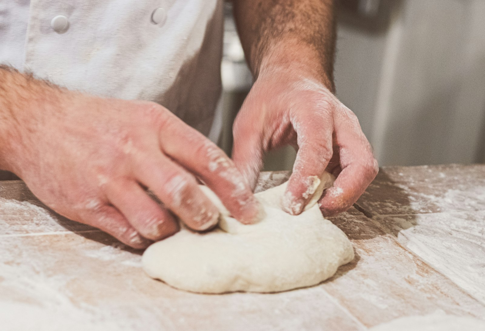
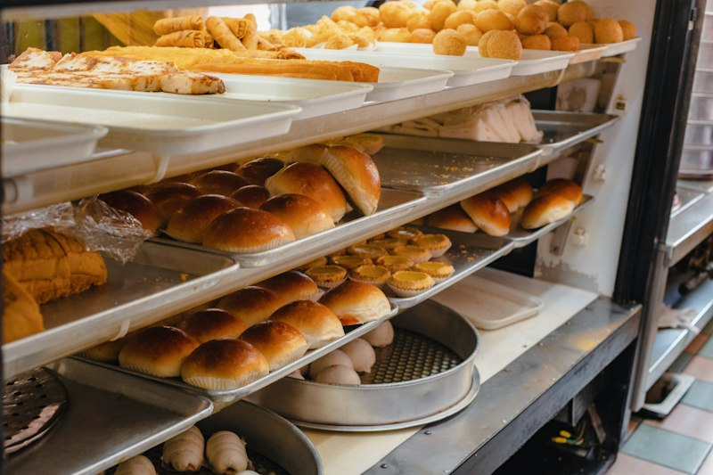
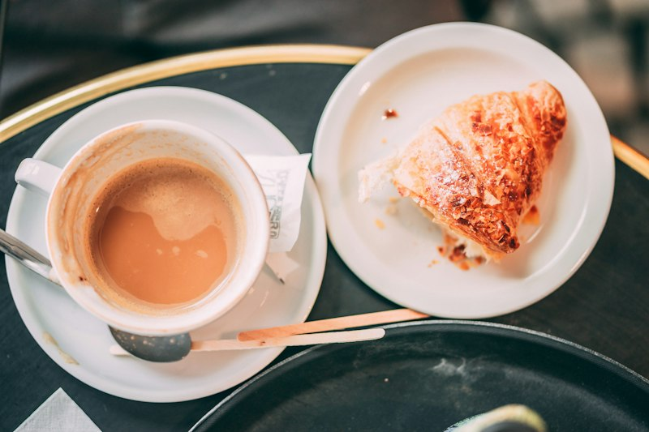
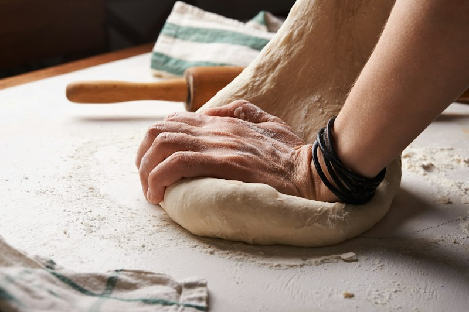
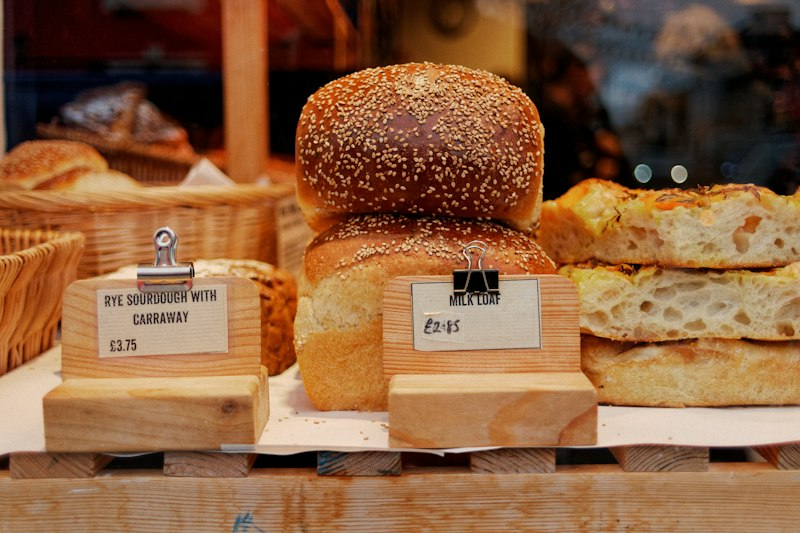

OUR STORY
작은 오븐 하나로
시작한 빵집
하루밀은 골목 끝 작은 가게에서 오븐 한 대로 시작했어요. 밀가루와 버터, 소금처럼 기본 재료를 좋은 것으로 고르고, 반죽은 하룻밤 천천히 발효시킵니다.
화려하진 않아도 매일 먹어도 질리지 않는 빵. 아침 식탁에 올리고 싶은 빵을 굽는 것이 저희의 하루입니다.
— 하루밀 베이커리 제빵사

OUR STORY
하루밀은 골목 끝 작은 가게에서 오븐 한 대로 시작했어요. 밀가루와 버터, 소금처럼 기본 재료를 좋은 것으로 고르고, 반죽은 하룻밤 천천히 발효시킵니다.
화려하진 않아도 매일 먹어도 질리지 않는 빵. 아침 식탁에 올리고 싶은 빵을 굽는 것이 저희의 하루입니다.
— 하루밀 베이커리 제빵사
BAKING TIME
갓 나온 빵이 가장 맛있어요. 좋아하는 빵이 나오는 시간에 맞춰 들러 주세요.
GALLERY



